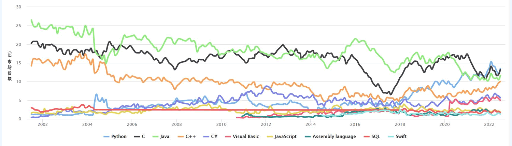

首页 > Python > Python编程基础
Python是什么，Python简介
Python 是荷兰人 Guido van Rossum （吉多·范罗苏姆，中国程序员称其为“龟叔”）在 1990 年初开发的一种解释型编程语言。
图1：Python 的标志（Logo）
Python 的诞生是极具戏曲性的，据 Guido 自述记载，Python 语言是在圣诞节期间为了打发无聊的时间而开发的，之所以会选择 Python 作为该编程语言的名字，是因为 Guido 是 Monty Python 戏剧团的忠实粉丝。
图2：Python之父——吉多·范罗苏姆
Python 语言是在 ABC 语言的基础上发展而来，其设计的初衷是成为 ABC 语言的替代品。ABC 语言虽然是一款功能强大的高级语言，遗憾的是，由于 ABC 语言不开放的原因，导致它没有得到普及应用。基于这个考虑，Guido 在开发 Python 之初就决定将其开源。
Python 中不仅添加了许多 ABC 语言没有的功能，同时，还为其设计了各种丰富而强大的库，利用这些 Python 库，程序员可以把使用其它语言制作的各类模块（尤其是C语言和 C++）很轻松地“黏连”在一起，因此 Python 又常被称为“胶水”语言。
注意：这里所说的库和模块，简单地理解就是一个个的源文件，每个文件中都包含可实现各种功能的方法（也可称为函数）。
从整体上看，Python 语言最大的特点就是简单，该特点主要体现在以下两个方面：
直至现在（2022 年 7 月份），根据 TIOBE 排行榜的显示，Python 依然占据第 1 名的位置，并且市场份额仍在持续提升（如表 2 所示）。
由于人工智能、大数据等行业的发展，使得 Python 近几年增姿迅猛，甚至把 C 语言、C++ 和 Java 甩在身后 ，成为编程语言排行榜冠军。
最后，我们不妨再看一下 Python 历年来的市场份额变化曲线（浅蓝色曲线表示 Python）。
可以看出，Python 已然站在风口之上。
错过了 C/C++ 的 PC 时代，又错过了 Java 的互联网和智能手机时代，你还想错过 Python 的人工智能和大数据时代吗？Python 正位于软件产业的第四次风口之上，把握好风口，你就能飞起来。
我们已经在《编译型语言和解释型语言的区别》一文中讲解什么是解释型语言。
图1：Python 的标志（Logo）
Python 的诞生是极具戏曲性的，据 Guido 自述记载，Python 语言是在圣诞节期间为了打发无聊的时间而开发的，之所以会选择 Python 作为该编程语言的名字，是因为 Guido 是 Monty Python 戏剧团的忠实粉丝。
图2：Python之父——吉多·范罗苏姆
Python 语言是在 ABC 语言的基础上发展而来，其设计的初衷是成为 ABC 语言的替代品。ABC 语言虽然是一款功能强大的高级语言，遗憾的是，由于 ABC 语言不开放的原因，导致它没有得到普及应用。基于这个考虑，Guido 在开发 Python 之初就决定将其开源。
Python 中不仅添加了许多 ABC 语言没有的功能，同时，还为其设计了各种丰富而强大的库，利用这些 Python 库，程序员可以把使用其它语言制作的各类模块（尤其是C语言和 C++）很轻松地“黏连”在一起，因此 Python 又常被称为“胶水”语言。
注意：这里所说的库和模块，简单地理解就是一个个的源文件，每个文件中都包含可实现各种功能的方法（也可称为函数）。
从整体上看，Python 语言最大的特点就是简单，该特点主要体现在以下两个方面：
- Python 的语法非常简洁明了，即便是非软件专业的初学者，也很容易上手。
- 和其它编程语言相比，实现同一个功能，Python 语言的实现代码往往是最短的。
网络上一直流传着“人生苦短，我用 Python”的说法，此言非虚！
看似 Python 是“不经意间”开发出来的，但丝毫不比其它编程语言差。事实也是如此，自 1991 年 Python 第一个公开发行版问世后，Python 从一名默默无闻的小卒开始成长，终于厚积薄发，一鸣惊人：- 2004 年，Python 的使用率呈线性增长，不断受到编程者的欢迎和喜爱；
- 2010 年，Python 荣膺 TIOBE 『2010 年度最佳编程语言』桂冠；
- 2017 年，IEEE Spectrum 发布的 『2017 年度编程语言』排行榜中，Python 位居第 1 位；
- 2018 年，Python 斩获 TIOBE『2018 年度最佳编程语言』第 1 名；
- 2020 年和 2021年，Python 更是连续两年摘得 TIOBE『年度最佳编程语』言桂冠。
直至现在（2022 年 7 月份），根据 TIOBE 排行榜的显示，Python 依然占据第 1 名的位置，并且市场份额仍在持续提升（如表 2 所示）。
| 2022年7月 | 2021年7月 | 编程语言 | 市场份额 | 变化 |
|---|---|---|---|---|
| 1 | 3 |
 Python Python |
13.44% |
 +2.48% +2.48% |
| 2 | 1 | C | 13.13% |
+1.50% |
| 3 | 2 | Java | 11.59% |
+0.40% |
| 4 | 4 | C++ | 10.00% |
+1.98% |
| 5 | 5 | C# | 5.65% |
+0.82% |
| 6 | 6 | Visual Basic | 4.97% |
+0.47% |
| 7 | 7 | JavaScript | 1.78% |
 -0.93% -0.93% |
| 8 | 9 | Assembly language | 1.65% |
-0.76% |
| 9 | 10 | SQL | 1.64% |
+0.11% |
| 10 | 16 | Swift | 1.27% |
+0.20% |
| 11 | 8 | PHP | 1.20% |
-1.38% |
| 12 | 13 | Go | 1.14% |
-0.03% |
| 13 | 11 | Classic Visual Basic | 1.07% |
-0.32% |
| 14 | 20 | Delphi/Object Pascal | 1.06% |
+0.21% |
| 15 | 17 | Ruby | 0.99% |
+0.04% |
| 16 | 21 | Objective-C | 0.94% |
+0.17% |
| 17 | 18 | Perl | 0.78% |
-0.12% |
| 18 | 14 | Fortran | 0.76% |
-0.36% |
| 19 | 12 | R | 0.76% |
-0.57% |
| 20 | 19 | MATLAB | 0.73% |
-0.15% |
由于人工智能、大数据等行业的发展，使得 Python 近几年增姿迅猛，甚至把 C 语言、C++ 和 Java 甩在身后 ，成为编程语言排行榜冠军。
最后，我们不妨再看一下 Python 历年来的市场份额变化曲线（浅蓝色曲线表示 Python）。

图3：Python 历年来市场份额变化曲线（点击查看详情）
图3：Python 历年来市场份额变化曲线（点击查看详情）
可以看出，Python 已然站在风口之上。
错过了 C/C++ 的 PC 时代，又错过了 Java 的互联网和智能手机时代，你还想错过 Python 的人工智能和大数据时代吗？Python 正位于软件产业的第四次风口之上，把握好风口，你就能飞起来。
关注公众号「站长严长生」，在手机上阅读所有教程，随时随地都能学习。内含一款搜索神器，免费下载全网书籍和视频。

微信扫码关注公众号